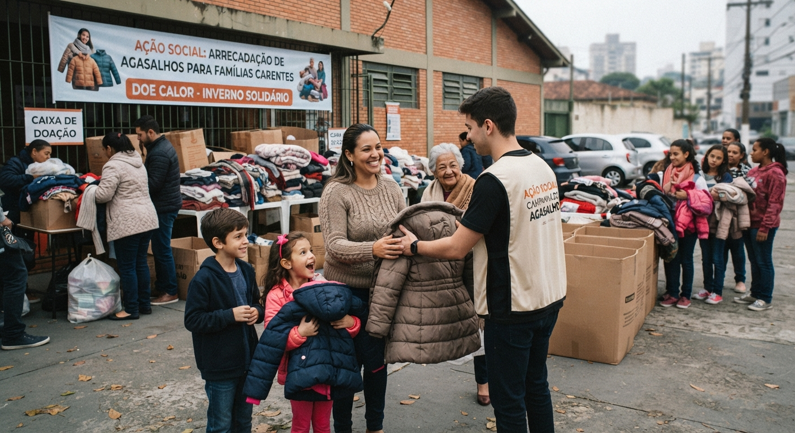
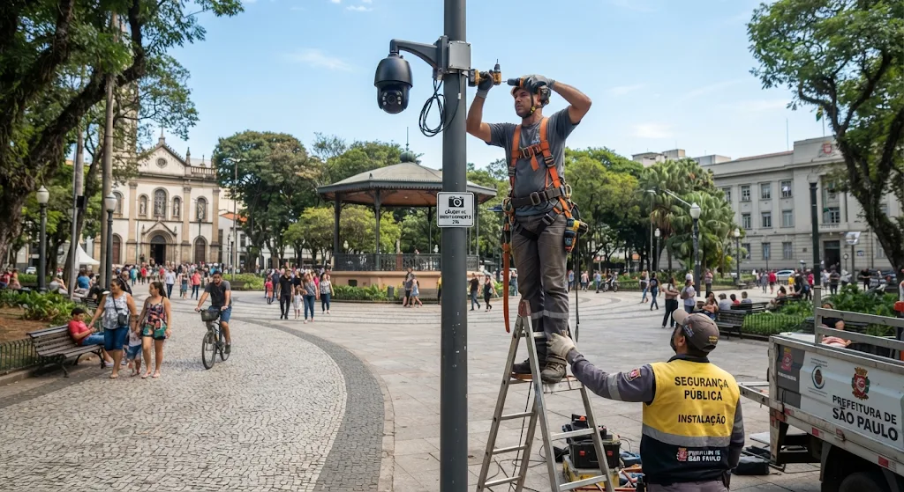
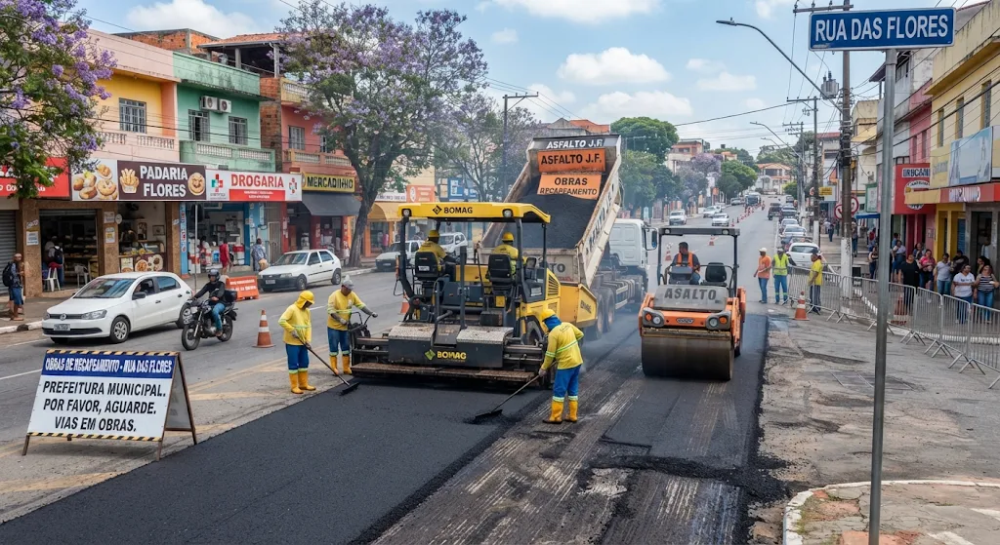
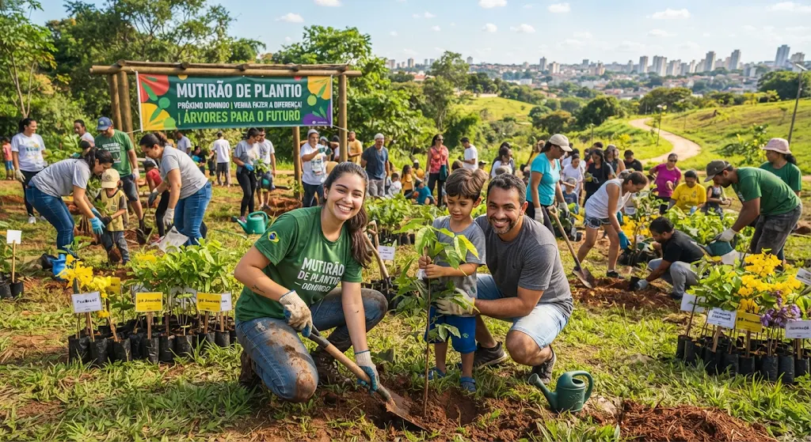
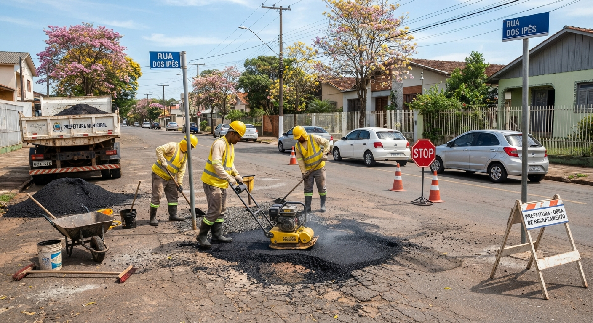
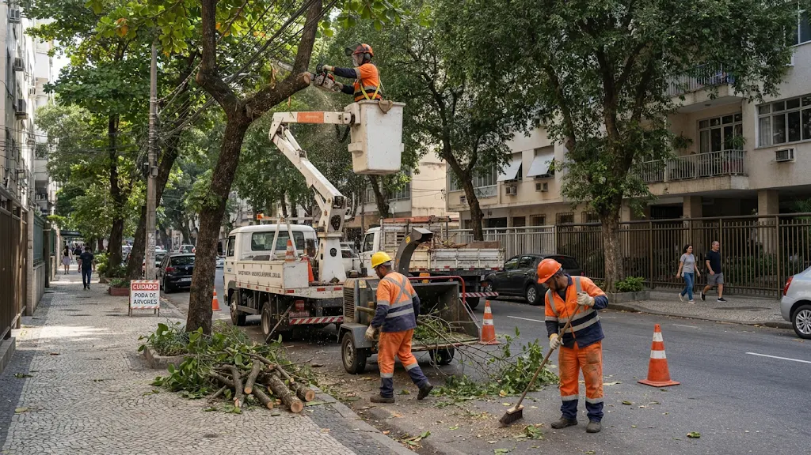
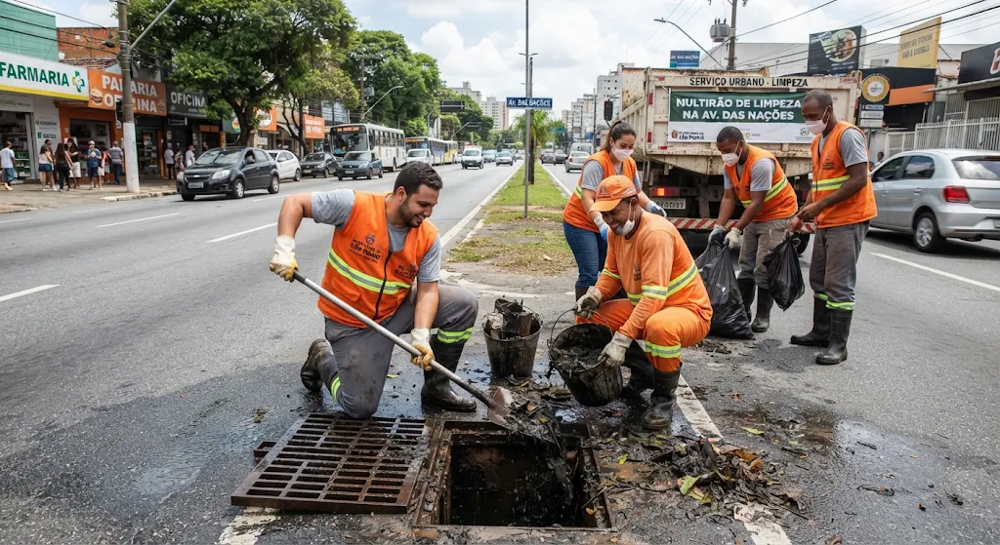
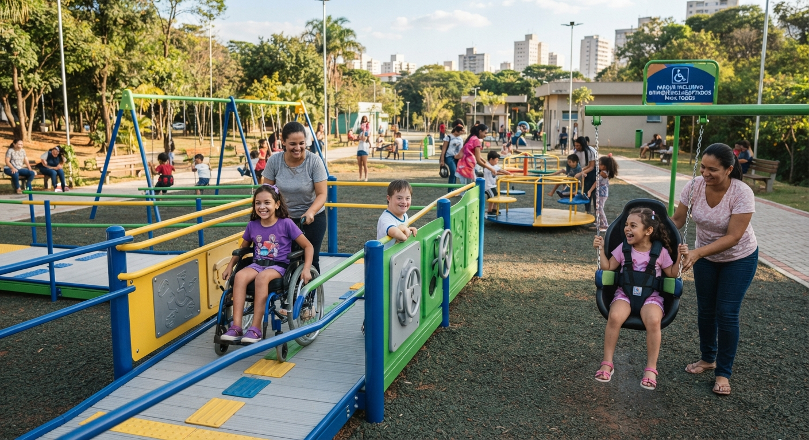

Nova praça do bairro é inaugurada com área de lazer
A obra, que era aguardada há mais de dois anos pelos moradores, finalmente foi entregue e já está aberta ao público. O espaço conta com academia ao ar livre, playground e pista de caminhada.
Campanha de vacinação contra a gripe começa amanhã
Idosos e crianças devem procurar o posto de saúde mais próximo a partir das 8h.
Associação de moradores convoca reunião para novembro
Pauta principal será a segurança do bairro e melhorias na iluminação pública.

Food truck de comidas típicas atrai multidão no fim de semana
Evento ocorreu na praça central e contou com mais de 10 opções gastronômicas.
Campeonato de futebol de várzea começa neste mês
As inscrições para os times do bairro vão até o final da semana.

Centro comunitário abre inscrições para cursos gratuitos
Cursos de informática, corte e costura e eletricista estão com vagas abertas.
Feira de empregos é anunciada para o final do mês
Empresas da região estarão oferecendo vagas de atendimento e logística.

Ação social arrecada agasalhos para famílias carentes
Doações podem ser entregues na paróquia do bairro até o dia 30.
Festa junina do bairro é remarcada para o próximo mês
A organização informou que o evento foi adiado devido às chuvas.
Campanha do agasalho bate recorde de doações neste ano
Mais de 5 mil peças foram arrecadadas e serão distribuídas na próxima semana.
Show de talentos locais anima a praça central no sábado
Apresentações musicais e de dança começam às 18h e a entrada é gratuita.

Conselho de segurança se reúne para debater melhorias
Encontro contou com a presença de representantes da Polícia Militar.

Palestra sobre educação financeira ocorre no centro comunitário
Evento gratuito abordará como organizar o orçamento familiar.
Apresentação de teatro de rua encanta crianças
Peça contou a história do bairro de forma lúdica e educativa.
Moradores cobram iluminação em rua do bairro
A rua escura tem facilitado a ação de assaltantes no período noturno.
Ronda policial é reforçada durante a madrugada
Viaturas estão passando pelas ruas principais a cada duas horas.

Novas câmeras de monitoramento são instaladas na praça
Equipamentos possuem visão noturna e estão conectados à central da PM.
Moradores relatam queda nos furtos após novas rondas
Número de ocorrências caiu 40% nas últimas semanas, segundo os vizinhos.
Delegacia do bairro amplia horário de atendimento
Agora o posto funciona das 7h às 22h, incluindo finais de semana.

Buraco na Av. Central causa transtornos no trânsito
Motoristas precisam desviar do buraco que já causou prejuízos a vários veículos.

Obras de recapeamento começam na Rua das Flores
A previsão é que os trabalhos durem cerca de duas semanas.

Cachorro desaparecido na Rua das Acácias
Ele atende pelo nome de "Thor", está usando uma coleira azul e é muito dócil.
Feira de adoção acontece neste sábado na praça
Haverá cerca de 30 animais disponíveis para adoção responsável.
Gatinho resgatado no bairro procura um novo lar
Ele foi resgatado por vizinhos e precisa de um tutor que o proteja.

Castração gratuita de felinos tem novas vagas abertas
Inscrições devem ser feitas no centro comunitário.

Cãozinho perdido no parque é devolvido aos donos
Ele havia fugido durante uma tempestade e foi encontrado por uma criança.

Protetores independentes pedem ajuda para ração
Doações podem ser entregues no pet shop da esquina.
Vacinação antirrábica acontece neste fim de semana
A campanha será realizada na praça central das 9h às 16h.

Cadela grávida é resgatada e precisa de lar temporário
Ela está sob os cuidados de uma protetora, mas precisa de um local seguro.

Zoonoses realiza inspeção em terrenos baldios
Objetivo é identificar focos de animais peçonhentos e possíveis criadouros.

Gatos abandonados no terreno da esquina geram apelo
Moradores têm levado comida e água, mas pedem ajuda para castração.

Dono procura cão idoso que sumiu perto da padaria
Ele tem 12 anos, problemas de visão e necessita de medicação diária.

Filhotes de gato são encontrados em caixa de papelão
Eles têm cerca de 3 semanas e precisam de cuidados especiais.

Vizinhos se unem para construir abrigo para cães
A estrutura foi montada em um terreno cedido por um morador.

Cãozinho de rua ganha banho e novo lar no bairro
Ele foi adotado por uma família que se comoveu com a história dele.

Gata resgatada no telhado é adotada por moradora
Ela estava presa há dois dias e foi salva pelos bombeiros.

Escola municipal recebe projeto de horta comunitária
Alunos e professores serão responsáveis pelo cultivo dos alimentos.

Coleta seletiva será expandida para mais 3 ruas
A medida visa reduzir o volume de resíduos enviados aos aterros.

Internet gratuita chega à praça principal do bairro
O sinal pode ser acessado por qualquer pessoa em um raio de 100 metros.

Mutirão de plantio de árvores acontece no próximo domingo
Serão plantadas 50 mudas de árvores nativas na região.

Parque linear do bairro ganha novos bancos e lixeiras
Melhorias fazem parte do projeto de revitalização do espaço público.
Nova iluminação de LED é instalada na rua do comércio
A substituição das lâmpadas antigas vai gerar economia de energia.

Tapa-buracos chega à rua dos Ipês nesta semana
Equipes da prefeitura estarão no local na terça e quarta-feira.

Equipe de poda de árvores atende ruas da zona sul
O serviço evita quedas de galhos durante a temporada de chuvas.
Novo posto de saúde começa a ser construído
Obra deve ser concluída em até 8 meses e vai atender toda a região.

Multirão de limpeza desentope bueiros na Av. das Nações
Trabalho é uma medida preventiva para evitar alagamentos.
Calçada da rua principal passa por reforma
O local está sendo adaptado para melhorar a acessibilidade.

Playground da praça recebe brinquedos adaptados
Equipamentos inclusivos garantem diversão para todas as crianças.
Vazamento de água é consertado na rua das Palmeiras
O problema causava transtornos aos moradores há mais de uma semana.
Novos contentores de lixo são distribuídos na região
Os equipamentos são mais resistentes e possuem tampa para evitar odores.
Nenhuma notícia encontrada para os filtros selecionados.